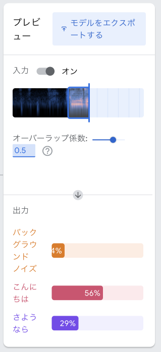

3. ティーチャブル・マシンで音声認識
1
音声プロジェクトをつくろう
次は音声認識をしてみましょう。
まずティーチャブル・マシンを開き、以下の手順にしたがって音声プロジェクトをつくってください。
ティーチャブル・マシン：
https://teachablemachine.withgoogle.com/
- トップ画面で「使ってみる」をクリックします。
- 「新しいプロジェクト」画面で「音声プロジェクト」をクリックします。
- 以下のような新しい音声プロジェクトが出来ます
2
音声を録音して登録しよう
次は手順にしたがって認識させたい音声を録音してティーチャブル・マシンに登録します。 今回は例として「こんにちは」「さようなら」の音声認識をしてみましょう。
- まず何も話していないときの音声を録音します。「バックグラウドノイズ」の枠の下にある「マイク」をクリックしてマイクを起動して下さい。もし使用許可の画面がでたら許可してください。
- 「20秒間録画する」をクリックすると録音を開始します。
- 録音が終了したら「サンプルを抽出」をクリックします。すると枠の右の方にサンプルが20個できます。
- では「こんにちは」を録音して登録しましょう。「Class 1」を「こんにちは」に変更し、「2秒間録画する」をクリックして「こんにちは」とマイクに向かって話して下さい。
- 録音したら「サンプルを抽出」をクリックします。すると枠の右の方にサンプルが2個程できます。
- サンプルは8個以上必要です。「こんにちは」の録音を繰り返してサンプルを8個以上にして下さい。
- 「さようなら」も同様に録音撮影しますがこのままだと音声を1つしか登録できないので、画面の下にある「クラスを追加」をクリックして登録するための枠を増やします。
- 枠を増やしたら同じように「Class 2」を「さようなら」に変更し、「さようなら」の録音を繰り返してサンプルを8個以上にしてください。
3
学習(トレーニング)して音声認識させよう
「バックグラウンドノイズ」「こんにちは」「さようなら」の3つの音声を登録しましたが、このままではまだティーチャブル・マシンは音声認識をしてくれません。 音声認識をさせるためにはまずティーチャブル・マシンに音声を学習(トレーニング)させる必要があります。 では以下の手順で学習をして音声認識をしてみましょう。
- 「モデルをトレーニングする」ボタンを押します。
- しばらくするとトレーニングが終わり、右の「プレビュー」枠に音声画像(専門用語でスペクトログラムと言います)が表示されます。
- マイクに向かって「こんにちは」「さようなら」と話して下さい。可能性が高い音声のバーが一番長くなります。 

4
学習データをアップロードする
ブラウザのタブを閉じるとせっかく学習したデータが全て消えてしまいますので、Googleのサーバに学習データをアップロードして後でも使えるようにしましょう。 では以下の手順で学習結果のアップロードをしてください。
- 「プレビュー」枠にある「モデルをエクスポート」をクリックして下さい。
- ダイアログが表示されたら「モデルをアップロード」をクリックして下さい。
- アップロードが終わったら「共有可能なリンク」に表示されたアドレスをメモ帳アプリなどにコピーし、適当な名前を付けて保存して下さい。
- ティーチャブル・マシンのタブを閉じて終了します。